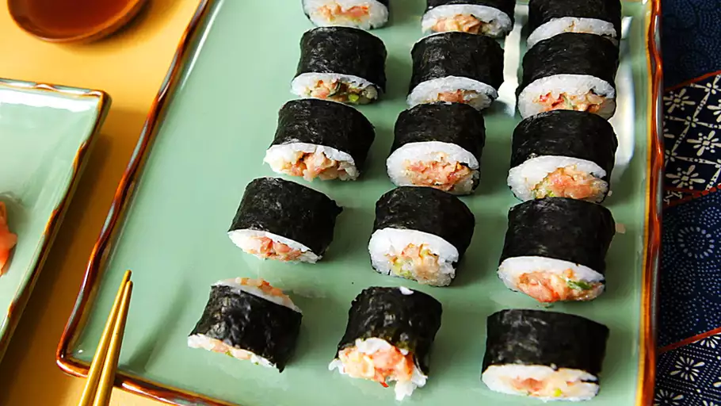

Spicy Tuna Roll

Description
A spicy tuna roll is a type of sushi roll made with diced raw tuna mixed with spicy mayo or chili sauce, rolled in vinegared rice and seaweed (nori).
Often, it includes ingredients like cucumber or avocado for added texture and flavor.
It's known for its creamy, spicy kick and is a popular choice in Japanese cuisine worldwide.
Ingredients
- 4 sheets nori (dry seaweed)
- ½ pound sashimi-grade tuna, finely chopped
- 4 tablespoons mayonnaise
- 2 green onions, chopped
- 1 tablespoon hot chile sauce
- 2 ½ cups prepared sushi rice
- 1 tablespoon sesame seeds
Steps
- Cut off the bottom quarter of each nori sheet; reserve for another use.
- Combine chopped tuna, mayonnaise, green onions, and hot sauce in a bowl.
- Center 1 sheet of nori on a bamboo sushi mat. Wet your hands. Spread a thin layer of rice on the nori using your hands; press into a thin layer, leaving a 1/2-inch space at the bottom edge. Sprinkle with sesame seeds. Arrange 1/4 of the tuna mixture in a line across the rice, about 1/3 of the way down from the top of the sheet.
- Wet the uncovered edge of the nori. Lift the top end of the mat and firmly roll it over the ingredients. Roll it forward to make a complete roll. Repeat with remaining ingredients.
- Slice the rolls into 3/4-inch pieces using a wet knife. Serve immediately or refrigerate until serving.